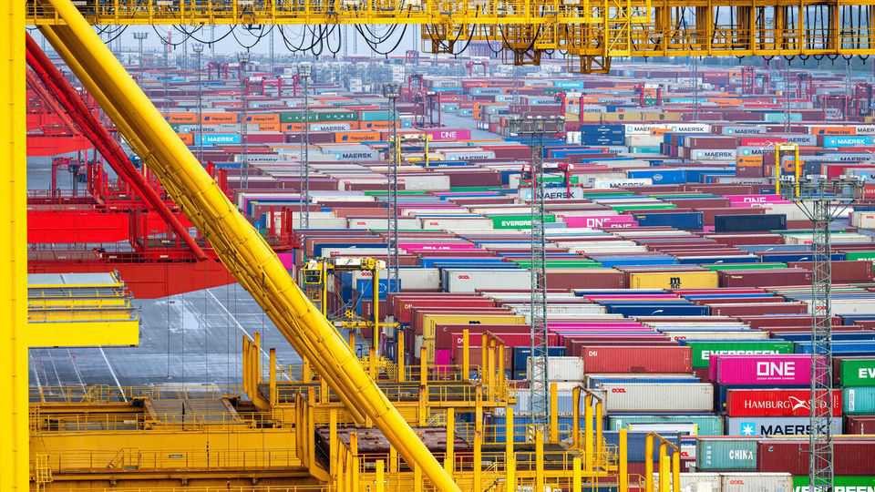
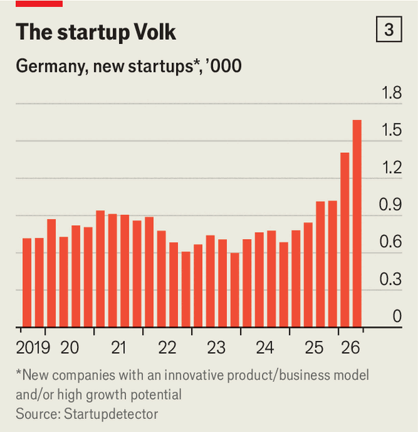

Can Germany’s economic recovery outrun the AfD?
It is showing signs of life—but fragile ones

Sep 10th 2026
Many germans are in shock after the unexpectedly strong showing for the far-right Alternative for Germany (AfD) at state elections in Saxony-Anhalt on September 6th. One of them is Friedrich Merz. The chancellor sounded unusually contrite after the results came in, describing the AfD’s landslide victory as the most serious ballot-box defeat his Christian Democrats have suffered in years, even decades. He was less penitent when vowing not to resign—and to see through his unpopular reforms to the ailing public-pension system, ossified labour market and other ills plaguing Europe’s biggest economy.

Mr Merz’s political setback comes just as it is beginning to show signs of life. Although industrial production unexpectedly fell in July, owing chiefly to longer-than-usual summer stoppages at several car factories, GDP is looking positively sprightly going by its recent moribund form. Output grew by 0.3% in the second quarter, compared with the first, and by 1% year on year (see chart 1). The Ifo Institute for Economic Research, a respected think-tank, has raised its growth forecast for the whole year from 0.8% to 1.4%. Two other similarly august outfits, the Kiel Institute for the World Economy and RWI, have both increased theirs from 0.8% to 1.3%.

Other indicators also point to a resuscitation. In 2025 inbound foreign direct investment increased by 50%, to €86bn ($100bn, or 1.9% of GDP). In the first six months of 2026 exports rose by 3.9% year on year. In August Ifo’s export-expectations index, calculated by subtracting the share of manufacturers that think exports will fall from the share that think they will rise, was at its perkiest since before Russia invaded Ukraine in February 2022. Fewer exports are going to China and more to America (see chart 2). The decline in industrial production notwithstanding, factory orders climbed in July for a third consecutive month. Builders of artificial-intelligence data centres are snapping up German electrical and power equipment.

More notable still is a revival of German entrepreneurs’ animal spirits. More than 3,000 startups were founded in the first half of 2026, an increase of 88% over last year, observes Deutsche Bank (see chart 3); one in three has an AI focus. In the same period venture-capital investments grew by 44%, to €5.8bn—puny by American standards but none too shabby by German ones. In June Neura Robotics, which makes industrial robots in Baden-Württemberg, announced a funding round raking in up to $1.4bn. The same month Isar Aerospace, a Bavarian rocketry firm, raised over $300m. On September 5th Isar’s Spectrum rocket blasted off from Norway carrying five tiny satellites, the first time a private business has launched a craft into orbit from Europe.
All this points to Germany “renewing its economy”, says Jens Südekum, an adviser to the finance minister, Lars Klingbeil. Under pressure from foreign rivals and changing technology, once-mighty industries such as carmaking and chemicals are shrinking. Last week the supervisory board of Volkswagen, Europe’s biggest carmaker, approved a plan involving 50,000 job cuts and several factory closures.
Clemens Fuest, president of the Ifo Institute, agrees that Germany is starting to reinvent its business model. At the same time, however, he worries that the economy’s nascent recovery is “borrowed” courtesy of exports and debt-fuelled government spending on the energy transition, infrastructure and defence. The public sector now accounts for 50% of economic output, up from 45% in 2019. In relative terms, Mr Fuest notes, private investment has retreated. Structural problems such as an ageing population and high energy prices have not gone away.
Roland Busch, chief executive of Siemens, an engineering giant, also believes that more is needed for a sustainable recovery. “The economic outlook remains fragile as we continue to lose competitiveness day by day,” he says. The signs of life are welcome but weak, he adds. Business sentiment could shift rapidly.
Mr Busch and many other business leaders insist that the only way to ensure that the recovery does not peter out prematurely is for Mr Merz to accelerate his reforms. The populist triumph in Saxony-Anhalt, the second-poorest of Germany’s Länder and with the oldest population, makes the politics of these vote-losing measures harder than ever. Their sensible economics has never been more vital. ■